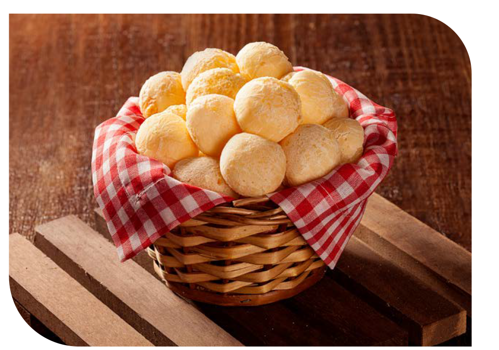

Pão de Queijo
Igredientes
- 1 Ovo inteiro
- 1 Colher (café) de sal
- 1 Xicara (cha) de leite
- 1 Xicara (cha) de queijo minas meia cura ralado
- 1 Xicara (cha) de polvilho azedo
Passo a Passo
- Em uma vasilha, misture todos os ingredientes, menos o leite.
- Em seguida, vá adicionando o leite aos poucos, até que a massa fique homogênea
- Modele os pães e coloque-os em forma untada com óleo.
- Levar ao forno pré aquecido por 40 minutos ou até dourar.
Suas anotaçoes
clique aqui para adicionar suas observações sobre como ficou a sua fornada...

Ver Segredo do ChefJamais coloque os ovos com a massa quente, senão eles cozinham e o pão não cresce!